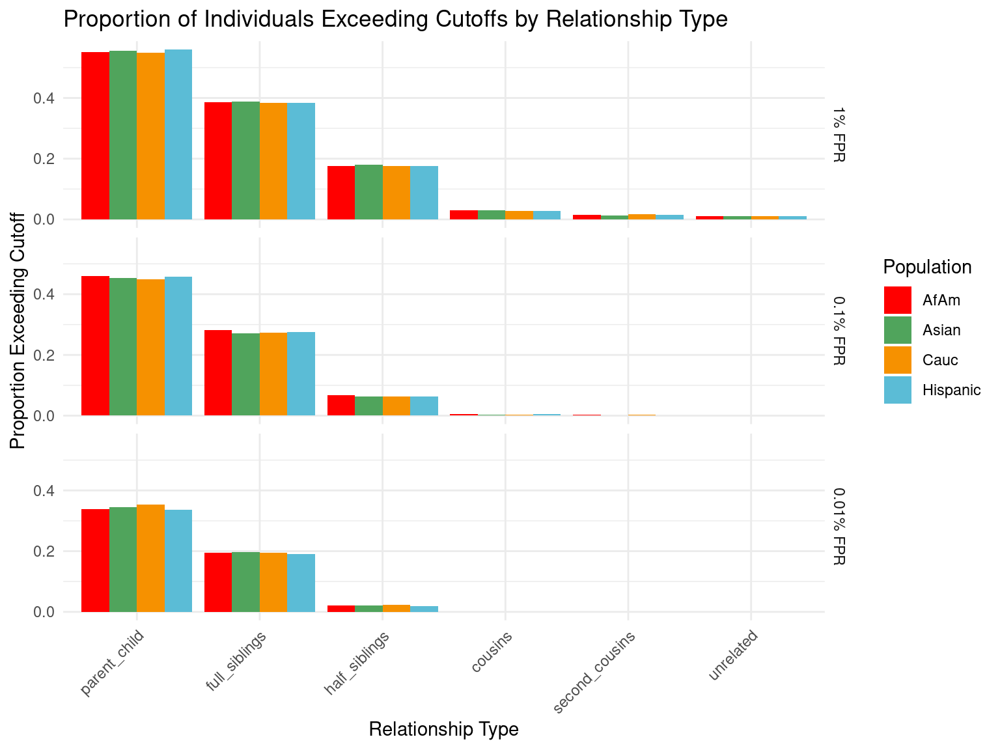

Simulation of STR Pairs and Calculation of Likelihood Ratios
Tina Lasisi
2024-07-10 18:29:46
Last updated: 2024-07-10
Checks: 6 1
Knit directory: PODFRIDGE/
This reproducible R Markdown analysis was created with workflowr (version 1.7.1). The Checks tab describes the reproducibility checks that were applied when the results were created. The Past versions tab lists the development history.
The R Markdown file has unstaged changes. To know which version of
the R Markdown file created these results, you’ll want to first commit
it to the Git repo. If you’re still working on the analysis, you can
ignore this warning. When you’re finished, you can run
wflow_publish to commit the R Markdown file and build the
HTML.
Great job! The global environment was empty. Objects defined in the global environment can affect the analysis in your R Markdown file in unknown ways. For reproduciblity it’s best to always run the code in an empty environment.
The command set.seed(20230302) was run prior to running
the code in the R Markdown file. Setting a seed ensures that any results
that rely on randomness, e.g. subsampling or permutations, are
reproducible.
Great job! Recording the operating system, R version, and package versions is critical for reproducibility.
Nice! There were no cached chunks for this analysis, so you can be confident that you successfully produced the results during this run.
Great job! Using relative paths to the files within your workflowr project makes it easier to run your code on other machines.
Great! You are using Git for version control. Tracking code development and connecting the code version to the results is critical for reproducibility.
The results in this page were generated with repository version f80f86e. See the Past versions tab to see a history of the changes made to the R Markdown and HTML files.
Note that you need to be careful to ensure that all relevant files for
the analysis have been committed to Git prior to generating the results
(you can use wflow_publish or
wflow_git_commit). workflowr only checks the R Markdown
file, but you know if there are other scripts or data files that it
depends on. Below is the status of the Git repository when the results
were generated:
Ignored files:
Ignored: .DS_Store
Ignored: .Rhistory
Ignored: .Rproj.user/
Ignored: data/.DS_Store
Unstaged changes:
Modified: analysis/STR-simulation.Rmd
Note that any generated files, e.g. HTML, png, CSS, etc., are not included in this status report because it is ok for generated content to have uncommitted changes.
These are the previous versions of the repository in which changes were
made to the R Markdown (analysis/STR-simulation.Rmd) and
HTML (docs/STR-simulation.html) files. If you’ve configured
a remote Git repository (see ?wflow_git_remote), click on
the hyperlinks in the table below to view the files as they were in that
past version.
| File | Version | Author | Date | Message |
|---|---|---|---|---|
| Rmd | f80f86e | tinalasisi | 2024-07-10 | Updated STR-simulation.Rmd |
| html | f80f86e | tinalasisi | 2024-07-10 | Updated STR-simulation.Rmd |
| Rmd | 11fb32c | Tina Lasisi | 2024-03-10 | write CSVs with output data |
| html | cf281b6 | Tina Lasisi | 2024-03-03 | Build site. |
| Rmd | 2596546 | Tina Lasisi | 2024-03-03 | wflow_publish("analysis/*", republish = TRUE, all = TRUE, verbose = TRUE) |
From Weight-of-evidence for forensic DNA profiles book
Likelihood ratio for a single locus is:
\[ R=\kappa_0+\kappa_1 / R_X^p+\kappa_2 / R_X^u \] Where \(\kappa\) is the probability of having 0, 1 or 2 alleles IBD for a given relationship.
The \(R_X\) terms are quantifying the “surprisingness” of a particular pattern of allele sharing.
The \(R_X^p\) terms attached to the \(kappa_1\) are defined in the following table:
\[ \begin{aligned} &\text { Table 7.2 Single-locus LRs for paternity when } \mathcal{C}_M \text { is unavailable. }\\ &\begin{array}{llc} \hline c & Q & R_X \times\left(1+2 F_{S T}\right) \\ \hline \mathrm{AA} & \mathrm{AA} & 3 F_{S T}+\left(1-F_{S T}\right) p_A \\ \mathrm{AA} & \mathrm{AB} & 2\left(2 F_{S T}+\left(1-F_{S T}\right) p_A\right) \\ \mathrm{AB} & \mathrm{AA} & 2\left(2 F_{S T}+\left(1-F_{S T}\right) p_A\right) \\ \mathrm{AB} & \mathrm{AC} & 4\left(F_{S T}+\left(1-F_{S T}\right) p_A\right) \\ \mathrm{AB} & \mathrm{AB} & 4\left(F_{S T}+\left(1-F_{S T}\right) p_A\right)\left(F_{S T}+\left(1-F_{S T}\right) p_B\right) /\left(2 F_{S T}+\left(1-F_{S T}\right)\left(p_A+p_B\right)\right) \\ \hline \end{array} \end{aligned} \]
For our purposes we will take out the \(F_{S T}\) values. So the table will be as follows:
\[ \begin{aligned} &\begin{array}{llc} \hline c & Q & R_X \\ \hline \mathrm{AA} & \mathrm{AA} & p_A \\ \mathrm{AA} & \mathrm{AB} & 2 p_A \\ \mathrm{AB} & \mathrm{AA} & 2p_A \\ \mathrm{AB} & \mathrm{AC} & 4p_A \\ \mathrm{AB} & \mathrm{AB} & 4 p_A p_B/(p_A+p_B) \\ \hline \end{array} \end{aligned} \]
If none of the alleles match, then the \(\kappa_1 / R_X^p = 0\).
The \(R_X^u\) terms attached to the \(kappa_2\) are defined as:
If both alleles match and are homozygous the equation is 6.4 (pg 85). Single locus match probability: \(\mathrm{CSP}=\mathcal{G}_Q=\mathrm{AA}\) \[ \frac{\left(2 F_{S T}+\left(1-F_{S T}\right) p_A\right)\left(3 F_{S T}+\left(1-F_{S T}\right) p_A\right)}{\left(1+F_{S T}\right)\left(1+2 F_{S T}\right)} \] Simplified to: \[ p_A{ }^2 \]
If both alleles match and are heterozygous, the equation is 6.5 (pg 85) Single locus match probability: \(\mathrm{CSP}=\mathcal{G}_Q=\mathrm{AB}\) \[ 2 \frac{\left(F_{S T}+\left(1-F_{S T}\right) p_A\right)\left(F_{S T}+\left(1-F_{S T}\right) p_B\right)}{\left(1+F_{S T}\right)\left(1+2 F_{S T}\right)} \] Simplified to:
\[ 2 p_A p_B \] If both alleles do not match then \(\kappa_2 / R_X^u = 0\).
LR function
Flowchart

Input for LR function
Rscript for simulation
Initialization: Load required R packages and set the working directory.
Parameter Configuration: Input parameters for the number of simulations for unrelated and related pairs are specified, allowing adjustable sample sizes.
Data Preparation: Aggregate CODIS allele frequency data from CSV files representing different populations into a single dataset.
IBD Probability Definitions: Construct a table detailing the probabilities of sharing zero, one, or two alleles identical by descent (IBD) for various relationship types.
Allele Frequency Calculation: Calculate allele frequencies within the population for each simulated pair to determine the likelihood of observing specific allele combinations.
Likelihood Ratio Computation: Calculate likelihood ratios for each pair using allele frequencies and IBD probabilities, focusing on \(R_{Xp}\) and \(R_{Xu}\) values.
Simulation of Individual Pairs: Generate alleles for individuals based on population-specific allele frequencies to simulate STR pairs.
Shared Allele Analysis: Evaluate the number of alleles shared between pairs, categorizing them by their genetic relationship.
Aggregate Analysis and Visualization: Summarize the results and generate visual representations, such as box plots and heatmaps, to illustrate the relationship between known and tested relationships across populations.
Result Exportation: Export aggregated results as CSV files for further analysis.
Due to the computational cost of simulating large numbers of STR pairs, the script has been run separately and we visualize the results below.
Simulation results
Rows: 360000 Columns: 6
── Column specification ────────────────────────────────────────────────────────
Delimiter: ","
chr (3): population, known_relationship_type, tested_relationship_type
dbl (3): replicate_id, num_shared_alleles_sum, log_R_sum
ℹ Use `spec()` to retrieve the full column specification for this data.
ℹ Specify the column types or set `show_col_types = FALSE` to quiet this message.Proportion of individuals of known relationship type exceeding likelihood cut-off
population relationship_type fp_rate prop_exceeding
1 AfAm parent_child 0.1 1.000
2 Asian parent_child 0.1 1.000
3 Cauc parent_child 0.1 1.000
4 Hispanic parent_child 0.1 1.000
5 AfAm full_siblings 0.1 0.794
6 Asian full_siblings 0.1 0.820`summarise()` has grouped output by 'population'. You can override using the
`.groups` argument.
Cut-offs for each FPR
`summarise()` has grouped output by 'population'. You can override using the
`.groups` argument.# A tibble: 24 × 7
population known_relationship_type mean_log_R_sum median_log_R_sum
<chr> <chr> <dbl> <dbl>
1 AfAm cousins -0.533 2.42
2 AfAm full_siblings 10.5 11.5
3 AfAm half_siblings 3.85 6.80
4 AfAm parent_child 19.6 19.0
5 AfAm second_cousins -1.23 1.78
6 AfAm unrelated -2.00 0.914
7 Asian cousins -0.538 2.42
8 Asian full_siblings 10.5 11.6
9 Asian half_siblings 3.82 6.78
10 Asian parent_child 19.5 18.9
# ℹ 14 more rows
# ℹ 3 more variables: min_log_R_sum <dbl>, max_log_R_sum <dbl>, count <int>Calculate LLR cutoffs for unrelated pairs at each FPR by population
This table presents aggregated log_R_sum values by relationship type for each population, alongside LLR cutoffs calculated for unrelated pairs to maintain false positive rates (FPRs) of 1%, 0.1%, and 0.01%. The cutoffs indicate the LLR threshold above which a pair is less likely to be unrelated at the given FPR, thereby serving as a critical benchmark for assessing relationship evidence. The mean log_R_sum values further elucidate the average strength of genetic evidence supporting each relationship type within populations, highlighting variations and consistencies in genetic relatedness indicators across demographic groups.
Attaching package: 'kableExtra'The following object is masked from 'package:dplyr':
group_rows| population | cousins | full_siblings | half_siblings | parent_child | second_cousins | unrelated |
|---|---|---|---|---|---|---|
| AfAm | -0.5334790 | 10.45417 | 3.849582 | 19.62211 | -1.229432 | -2.003701 |
| Asian | -0.5379709 | 10.45853 | 3.821000 | 19.54267 | -1.387000 | -1.982983 |
| Cauc | -0.5075911 | 10.48275 | 3.873924 | 19.51039 | -1.218428 | -1.982207 |
| Hispanic | -0.5536143 | 10.40972 | 3.837237 | 19.58039 | -1.249979 | -1.984905 |

| Version | Author | Date |
|---|---|---|
| f80f86e | tinalasisi | 2024-07-10 |

R version 4.4.1 (2024-06-14)
Platform: x86_64-apple-darwin20
Running under: macOS Sonoma 14.5
Matrix products: default
BLAS: /Library/Frameworks/R.framework/Versions/4.4-x86_64/Resources/lib/libRblas.0.dylib
LAPACK: /Library/Frameworks/R.framework/Versions/4.4-x86_64/Resources/lib/libRlapack.dylib; LAPACK version 3.12.0
locale:
[1] en_US.UTF-8/en_US.UTF-8/en_US.UTF-8/C/en_US.UTF-8/en_US.UTF-8
time zone: America/Detroit
tzcode source: internal
attached base packages:
[1] stats graphics grDevices utils datasets methods base
other attached packages:
[1] kableExtra_1.4.0 DiagrammeR_1.0.11 patchwork_1.2.0 lubridate_1.9.3
[5] forcats_1.0.0 stringr_1.5.1 dplyr_1.1.4 purrr_1.0.2
[9] readr_2.1.5 tidyr_1.3.1 tibble_3.2.1 ggplot2_3.5.1
[13] tidyverse_2.0.0 RColorBrewer_1.1-3 wesanderson_0.3.7 workflowr_1.7.1
loaded via a namespace (and not attached):
[1] gtable_0.3.5 xfun_0.45 bslib_0.7.0 htmlwidgets_1.6.4
[5] visNetwork_2.1.2 processx_3.8.4 callr_3.7.6 tzdb_0.4.0
[9] vctrs_0.6.5 tools_4.4.1 ps_1.7.6 generics_0.1.3
[13] parallel_4.4.1 fansi_1.0.6 highr_0.11 pkgconfig_2.0.3
[17] lifecycle_1.0.4 farver_2.1.2 compiler_4.4.1 git2r_0.33.0
[21] munsell_0.5.1 getPass_0.2-4 httpuv_1.6.15 htmltools_0.5.8.1
[25] sass_0.4.9 yaml_2.3.8 later_1.3.2 pillar_1.9.0
[29] crayon_1.5.3 jquerylib_0.1.4 whisker_0.4.1 cachem_1.1.0
[33] tidyselect_1.2.1 digest_0.6.36 stringi_1.8.4 labeling_0.4.3
[37] rprojroot_2.0.4 fastmap_1.2.0 grid_4.4.1 colorspace_2.1-0
[41] cli_3.6.3 magrittr_2.0.3 utf8_1.2.4 withr_3.0.0
[45] scales_1.3.0 promises_1.3.0 bit64_4.0.5 timechange_0.3.0
[49] rmarkdown_2.27 httr_1.4.7 bit_4.0.5 hms_1.1.3
[53] evaluate_0.24.0 knitr_1.47 viridisLite_0.4.2 rlang_1.1.4
[57] Rcpp_1.0.12 glue_1.7.0 xml2_1.3.6 svglite_2.1.3
[61] rstudioapi_0.16.0 vroom_1.6.5 jsonlite_1.8.8 R6_2.5.1
[65] systemfonts_1.1.0 fs_1.6.4